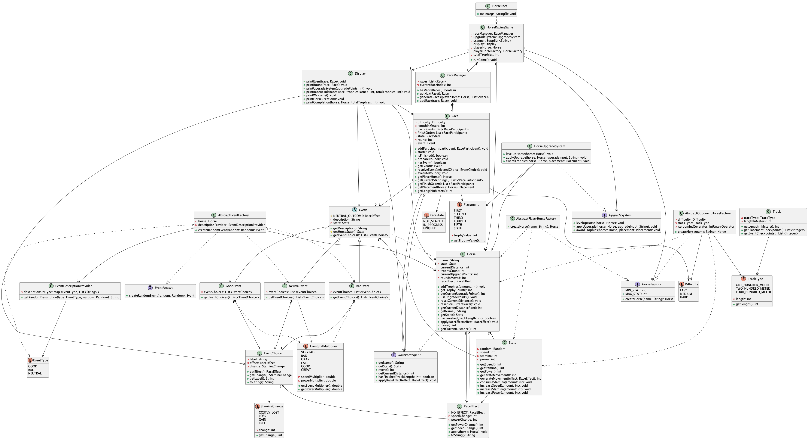

Hi, I'm Richard Ngo - a current student at the University of San Diego studying Computer Science and Mathematics with a focus on Math Research.
I am passionate about the world between theory and application within mathematics and computer science.
Outside of academics, I enjoy collaborating in research projects, eating food, traveling, spending time with friends and attending concerts.
Projects

Do I have the Same Birthday as YOU?
Within probability, there are 365 possible birthdays for each person within a room. It seems impossible for two people in a room to have the same birthday; however, it is more common than one might expect.
Birthday Paradox creates a simulation to examine the percentage of at least 2 people having the same birthday. Ultimately, after 23 people, the possibility is about the same as a coin flip.
We used Java to implement Birthday, Trial, Experiment, and Simulator. Using the simulator, we randomly assign birthdays (1–365) to a group of people and check whether at least two share the same birthday. This process is repeated many times for different group sizes, and the probability is estimated by calculating the percentage of trials with a match.

Elevator Simulator
This project is a Java-based elevator simulation that models how multiple elevators respond to service requests in a building over time. Instead of focusing on graphics, the project emphasizes decision-making, scheduling logic, and realistic movement constraints.
The system supports multiple elevator types with different behaviors, including standard, freight, penthouse, and express elevators. It also compares two scheduling strategies: a simple scheduler that assigns the next available elevator, and a complex scheduler that selects the elevator able to reach a request most efficiently.
I designed the system using object-oriented programming and SOLID principles to keep the code modular and extensible. I implemented key elevator subclasses and used test-driven development to validate call acceptance logic, movement behavior, and edge cases.
This project strengthened my understanding of system design, inheritance, polymorphism, and how architectural decisions impact scalability and maintainability.

Horse Racing Simulator
I wanted to build something that actually felt fun to play, not just a textbook exercise. Horse racing gave me the perfect premise — simple enough for anyone to follow, but with enough strategic depth to make every decision matter. Managing a horse through a full season, upgrading it between races, and reacting to surprises mid-race turned a coding assignment into something I genuinely wanted to finish.
You race a single horse across a six-race campaign on tracks of 100, 200, and 400 metres against five opponents. Between races you spend trophies on stat upgrades — speed, stamina, and power each affect your horse differently. During a race, events fire before each round offering three choices with clear trade-offs: burn stamina for a big boost, play it safe, or ease off to recover energy. A live board shows all six horses by placement, distance travelled, a progress bar, and how far each one has left to go.
Built in Java with no external frameworks, the architecture separates concerns cleanly: Race acts as a referee managing what happens on the track, RaceManager acts as a tournament director scheduling the six races and generating scaled opponents, and Simulator mediates between them as the game loop. Opponent stats are generated using the Abstract Factory pattern, scaled to race difficulty and track length. Event selection uses a weighted registry so adding new event types never requires touching the selection logic.
I was personally responsible for the horse factory, the full event system, and the Simulator display loop. The horse factory was built with test-driven development across six cycles covering budget accuracy, stat invariants, edge cases, and statistical distribution over thousands of generated horses. The round lifecycle was split into prepare and execute phases after discovering that generating QTEs after movement made the player's choice feel one round late — a small change that made the game noticeably more responsive.
Contact Me
richardngo112@yahoo.com